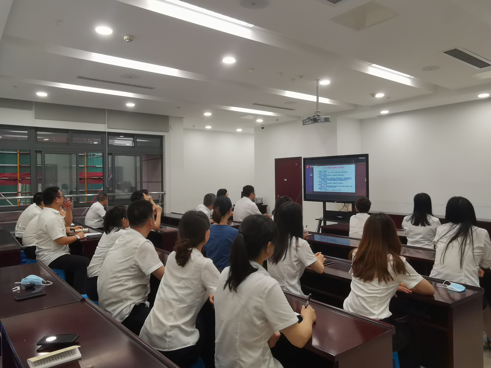

【信息发布时间：2020-07-28阅读次数：】 【我要打印】 【关闭】
7月27日晚，苏州市公共资源交易中心张家港分中心全体人员集体收看了“暨阳夜学”第三讲之优化营商环境专题讲座的网络直播。
本次讲座邀请了上海对外经贸大学美国研究中心首席专家、中国自贸区战略协同中心秘书长郭爱军授课。郭爱军以《优化营商环境 建设高质量发展现代化经济体系》为题，为大家呈上了一堂案例性强、总结性高的讲座。讲座中，他从2020年《政府工作报告》中，关于“开放和自由、公平的营商环境打造”相关表述入手，论述了国际大环境形势下，一流营商环境对增强城市竞争力的重要意义。此外，郭爱军还以上海自贸区的打造、上海优化营商环境的行动方案等样本案例，解析了服务型政府、宜商化环境和高水平主体三个要素对于优化营商环境的重要作用。
自2019年中心提出“三引领一率先”的奋斗目标以来，中心一直将优化公共资源交易领域营商环境作为重中之重，把推动交易改革、提升服务质量作为目标，以客户需求为根本导向，以理念升级、技术创新为内核，开发云智慧开评标、监管、分析、协同、金融服务等系统，全力打造惠企便民、阳光高效的智慧型交易中心，为港城吸引更多优质企业和资源。
